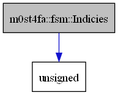

FSM Documentation#
The Main Class#
-
template<typename TransFuncT, typename InputT = std::string_view>
class FiniteStateMachine# Inheritence diagram for m0st4fa::fsm::FiniteStateMachine:
![digraph {
graph [bgcolor="#00000000"]
node [shape=rectangle style=filled fillcolor="#FFFFFF" font=Helvetica padding=2]
edge [color="#1414CE"]
"4" [label="m0st4fa::fsm::FiniteStateMachine< TransFuncT, std::string_view >" tooltip="m0st4fa::fsm::FiniteStateMachine< TransFuncT, std::string_view >"]
"2" [label="m0st4fa::fsm::DeterFiniteAutomaton< TransFuncT, InputT >" tooltip="m0st4fa::fsm::DeterFiniteAutomaton< TransFuncT, InputT >"]
"1" [label="m0st4fa::fsm::FiniteStateMachine< TransFuncT, InputT >" tooltip="m0st4fa::fsm::FiniteStateMachine< TransFuncT, InputT >" fillcolor="#BFBFBF"]
"3" [label="m0st4fa::fsm::NonDeterFiniteAutomaton< TransFuncT, InputT >" tooltip="m0st4fa::fsm::NonDeterFiniteAutomaton< TransFuncT, InputT >"]
"4" -> "1" [dir=forward tooltip="template-instance"]
"2" -> "1" [dir=forward tooltip="public-inheritance"]
"3" -> "1" [dir=forward tooltip="public-inheritance"]
}](../_images/graphviz-d017e6c7d31633c214c483eba7a86e9461056ae4.png)
Collaboration diagram for m0st4fa::fsm::FiniteStateMachine:
![digraph {
graph [bgcolor="#00000000"]
node [shape=rectangle style=filled fillcolor="#FFFFFF" font=Helvetica padding=2]
edge [color="#1414CE"]
"7" [label="FSM_TYPE" tooltip="FSM_TYPE"]
"6" [label="K" tooltip="K"]
"8" [label="Logger" tooltip="Logger"]
"9" [label="TransFuncT" tooltip="TransFuncT"]
"2" [label="m0st4fa::fsm::FSMStateSetType" tooltip="m0st4fa::fsm::FSMStateSetType"]
"1" [label="m0st4fa::fsm::FiniteStateMachine< TransFuncT, InputT >" tooltip="m0st4fa::fsm::FiniteStateMachine< TransFuncT, InputT >" fillcolor="#BFBFBF"]
"3" [label="std::set< FSMStateType >" tooltip="std::set< FSMStateType >"]
"5" [label="std::set< K >" tooltip="std::set< K >"]
"4" [label="unsigned" tooltip="unsigned"]
"2" -> "3" [dir=forward tooltip="usage"]
"1" -> "2" [dir=forward tooltip="usage"]
"1" -> "7" [dir=forward tooltip="usage"]
"1" -> "4" [dir=forward tooltip="usage"]
"1" -> "8" [dir=forward tooltip="usage"]
"1" -> "9" [dir=forward tooltip="usage"]
"3" -> "4" [dir=forward tooltip="usage"]
"3" -> "5" [dir=forward tooltip="template-instance"]
"5" -> "6" [dir=forward tooltip="usage"]
}](../_images/graphviz-45dbefa080a54279ae396dce9271731c59c37860.png)
A finite state machine that can check whether a string accepts according to some regular grammar.
This class is designed so as to contain common constructs that a typical state machine, no matter its type, will have; thus, it is mainly designed to be inherited from rather than used directly.
Subclassed by m0st4fa::fsm::DeterFiniteAutomaton< TransFuncT, InputT >, m0st4fa::fsm::NonDeterFiniteAutomaton< TransFuncT, InputT >
Public Functions
-
FiniteStateMachine() = default#
Default constructor.
-
inline FiniteStateMachine(const FSMStateSetType &fStates, const TransFuncT &tranFn, FSM_TYPE machineType, FlagsType flags)#
The typical constructor that will be used to construct a state machine.
- Parameters:
fStates – [in] The final states of the state machine.
tranFn – [in] The transition function of the state machine.
machineType – [in] The type of the state machine.
flags – [in] The flags given to the state machine.
-
inline FiniteStateMachine &operator=(const FiniteStateMachine &rhs)#
Copy operator for the state machine.
- Parameters:
rhs – [in] The right hand side (right argument) of the copy operator.
- Returns:
A reference to the state machine after assignment.
-
inline const FSMStateSetType &getFinalStates() const#
Gets the final states of the state machine.
-
inline FSM_TYPE getMachineType() const#
Gets the type of the state machine. For a DFA, the type is always
FSM_TYPE::MT_DFA; for an NFA it varies.
Protected Functions
-
inline bool _is_state_final(const FSMStateSetType &state) const#
Checks whether
stateis final (contains at least one final state) and returns a boolean indicating it.This is often used to check whether a string is accepted or not (whether we’ve reached an accepting state).
- Parameters:
state – [in] The state set to check for whether it is final or not.
- Returns:
Trueifstateis a final state set;Falseotherwise.
-
inline FSMStateSetType _get_final_states_from_state_set(const FSMStateSetType &state) const#
Searches for the final states within a state set and returns them.
- Parameters:
state – [in] The state set that will be searched.
- Returns:
The final states within
state, if any.
Protected Attributes
-
Logger m_Logger#
Used to log to the console in a standard way, implementing the correct colors.
-
TransFuncT m_TransitionFunc#
The function that will be called on each transition.
Protected Static Attributes
-
static constexpr FSMStateType START_STATE = 1#
The start state that will be used by the state machine.
-
FiniteStateMachine() = default#
Representing the Result of Simulations#
-
struct Indicies#
Collaboration diagram for m0st4fa::fsm::Indicies:
Indicies of matches by an FSM.
Public Functions
-
inline std::string toString() const#
Converts this Indicies object to a string. Uses the
Indicies::operator std::string() constbehind the scenes.
-
bool operator==(const Indicies&) const = default#
Compares this Indicies object with another for equality.
-
inline std::string toString() const#
-
struct FSMResult#
Collaboration diagram for m0st4fa::fsm::FSMResult:
![digraph {
graph [bgcolor="#00000000"]
node [shape=rectangle style=filled fillcolor="#FFFFFF" font=Helvetica padding=2]
edge [color="#1414CE"]
"7" [label="K" tooltip="K"]
"2" [label="bool" tooltip="bool"]
"1" [label="m0st4fa::fsm::FSMResult" tooltip="m0st4fa::fsm::FSMResult" fillcolor="#BFBFBF"]
"3" [label="m0st4fa::fsm::FSMStateSetType" tooltip="m0st4fa::fsm::FSMStateSetType"]
"8" [label="m0st4fa::fsm::Indicies" tooltip="m0st4fa::fsm::Indicies"]
"4" [label="std::set< FSMStateType >" tooltip="std::set< FSMStateType >"]
"10" [label="std::basic_string_view< Char >" tooltip="std::basic_string_view< Char >"]
"6" [label="std::set< K >" tooltip="std::set< K >"]
"9" [label="std::string_view" tooltip="std::string_view"]
"5" [label="unsigned" tooltip="unsigned"]
"1" -> "2" [dir=forward tooltip="usage"]
"1" -> "3" [dir=forward tooltip="usage"]
"1" -> "8" [dir=forward tooltip="usage"]
"1" -> "9" [dir=forward tooltip="usage"]
"3" -> "4" [dir=forward tooltip="usage"]
"8" -> "5" [dir=forward tooltip="usage"]
"4" -> "5" [dir=forward tooltip="usage"]
"4" -> "6" [dir=forward tooltip="template-instance"]
"6" -> "7" [dir=forward tooltip="usage"]
"9" -> "10" [dir=forward tooltip="public-inheritance"]
}](../_images/graphviz-fa7d8726d8e963dd7c8b1997de84773f75d3bdb2.png)
The result of a simulation by some state machine against some string.
Public Functions
-
inline size_t size() const#
Returns the size of the matched string, if any. In case no input matches, it returns 0.
-
inline std::string_view getMatch() const#
Gets (extracts) the matched string from the input against which the match was performed.
Public Members
-
bool accepted = false#
Whether the string was accepted by simulation.
trueif the string was accepted;falseotherwise.
-
FSMStateSetType finalState = {FiniteStateMachine<FSMStateType>::START_STATE}#
The final states used for this simulation.
-
Indicies indicies#
The indicies of the accepting string, if any. If no string accepts, both indicies will be 0.
-
const std::string_view input#
The input string that the simulation was performed against.
-
inline size_t size() const#
-
template<typename T = FSMStateType>
struct Substring# Collaboration diagram for m0st4fa::fsm::Substring:
![digraph {
graph [bgcolor="#00000000"]
node [shape=rectangle style=filled fillcolor="#FFFFFF" font=Helvetica padding=2]
edge [color="#1414CE"]
"5" [label="T" tooltip="T"]
"6" [label="m0st4fa::fsm::Indicies" tooltip="m0st4fa::fsm::Indicies"]
"1" [label="m0st4fa::fsm::Substring< T >" tooltip="m0st4fa::fsm::Substring< T >" fillcolor="#BFBFBF"]
"4" [label="std::vector< T >" tooltip="std::vector< T >"]
"3" [label="unsigned" tooltip="unsigned"]
"2" [label="std::vector< FSMStateType >" tooltip="std::vector< FSMStateType >"]
"6" -> "3" [dir=forward tooltip="usage"]
"1" -> "2" [dir=forward tooltip="usage"]
"1" -> "6" [dir=forward tooltip="usage"]
"4" -> "5" [dir=forward tooltip="usage"]
"2" -> "3" [dir=forward tooltip="usage"]
"2" -> "4" [dir=forward tooltip="template-instance"]
}](../_images/graphviz-b2a29ebb2a82042afcc9a4db09bf72a08d84c908.png)
Represents a single matched substring as the path through an FSM.
Note
Typically used only internally to record matched substrings.
Public Functions
-
inline auto begin() const#
Gets an iterator to the beginning of the path (that mimics the substring) through the FSM.
-
inline auto end() const#
Gets an iterator to the end of the path (that mimics the substring) through the FSM.
-
inline size_t size() const#
Gets the number of states in the path (that mimics the substring) through the FSM.
-
inline auto begin() const#
Type Aliases#
-
using m0st4fa::fsm::FSMStateType = unsigned#
A finite state machine state.
Remark
It is used by FiniteStateMachine objects and their descendants (objects of derived classes).
-
using m0st4fa::fsm::FlagsType = unsigned#
Flags given to finite state machine upon initialization.
Note
Not implemented yet.
-
using m0st4fa::fsm::IndexType = unsigned long long#
Index into some collection.
Concepts#
-
template<typename T>
concept StateSetConcept# - #include <FiniteStateMachine.h>
Ensure that
Tis the same as m0st4fa::fsm::FSMStateSetType or is the same as std::vector<m0st4fa::fsm::FSMStateType>.